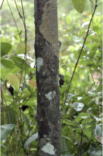
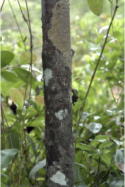
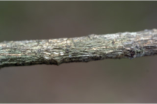
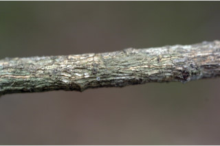
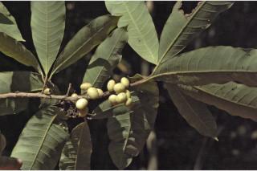
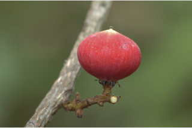
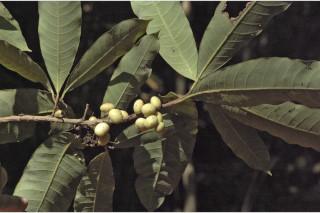
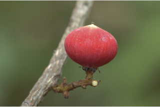

Trees, up to 15 m tall.
ಈ ಪ್ರಭೇಧವು 15 ಮೀ ಎತ್ತರದವರೆಗೂ ಬೆಳೆಯುವ ಮರಗಳಾಗಿರುತ್ತವೆ.
15 മീറ്റര് വരെ ഉയരത്തില് വളരുന്ന മരങ്ങള്.
மரங்கள் 15 மீ. உயரம் வரை வளரக்கூடியது.
Bark finely fissured, blaze brown.
ತೊಗಟೆಯು ಸೂಕ್ಷ್ಮವಾದ ಸೀಳಿಕೆಗಳನ್ನು ಹೊಂದಿದ್ದು ಕಂದು ಬಣ್ಣದ ಕಚ್ಚುಗಳನ್ನೊಳಗೊಂಡಿರುತ್ತದೆ.
നന്നായി വിണ്ടുകീറിയ പുറംതൊലി, വെട്ട് പാടിന് തവിട്ട് നിറം.
மரத்தின் பட்டை மெல்லிய வெடிப்புடையது; உள்பட்டை அரக்கு நிறம்.
Branchlets stout, glabrous.
ಕಿರುಕೊಂಬೆಗಳು ದೃಢವಾಗಿದ್ದು, ರೋಮರಹಿತವಾಗಿರುತ್ತವೆ.
ഉപശാഖകള് ദൃഢവും അരോമിലവും.
சிறிய நுனிக்கிளைகள் தடித்தது,உரோமங்களற்றது.
Latex black and scanty.
ಜಿನುಗುದ್ರವ ವಿರಳ ಹಾಗೂ ಕಪ್ಪು ಬಣ್ಣದ್ದಾಗಿರುತ್ತದೆ.
അല്പ്പ മാത്രമുണ്ടാകുന്ന കറുത്ത സ്രവം.
கருமை நிறமான சாறு மற்றும் மிகக் குறைந்த அளவு சாறுயுடையது.
Leaves simple, alternate, spiral; petiole 1-2.7 cm long, stout, glabrous, usually twisted; lamina 8-23 x 3.5-6.2 cm, oblong to oblanceolate, apex acuminate, base acute, margin slightly undulate, glabrous, coriaceous, glaucous beneath; midrib slightly raised above; secondary_nerves 9-25 pairs, nearly parallel; tertiary_nerves weakly percurrent.
ಎಲೆಗಳು ಸರಳರೂಪಿ. ಪರ್ಯಾಯ ಹಾಗೂ ಸುತ್ತು ಜೋಡನಾ ವ್ಯವಸ್ಥೆಯಲ್ಲಿರುತ್ತವೆ; ಎಲೆತೊಟ್ಟು 1 – 2.7 ಸೆ.ಮೀ ಉದ್ದವಿದ್ದು, ದೃಢ ಹಾಗೂ ರೋಮರಹಿತವಾಗಿದ್ದು ಸಾಮಾನ್ಯವಾಗಿ ತಿರುಚಿಕೊಂಡಿರುತ್ತದೆ; ಪತ್ರ ಚತುರಸ್ರಾಕಾರದಿಂದ ಬುಗುರಿ – ಈಟಿ ಸಮ್ಮಿಶ್ರಾಕಾರದಲ್ಲಿದ್ದು, ಕ್ರಮೇಣ ಚೂಪಾಗುವ ಎಲೆತುದಿ ಮತ್ತು ಚೂಪಾದ ಎಲೆ ಬುಡ, ಅಲೆಯಾಕಾರದ ಅಂಚು, ತೊಗಲಿನಂತಹ ಮೇಲ್ಮೈ ಹೊಂದಿದ್ದು ರೋಮರಹಿತವಾಗಿರುತ್ತದೆ; ಎಲೆಯ ತಳಭಾಗದ ಬೂದು ಹಸಿರು ಬಣ್ಣದಲ್ಲಿರುತ್ತದೆ; ಮಧ್ಯನಾಳ ಪತ್ರದ ಮೇಲ್ಭಾಗದಲ್ಲಿ ಕೊಂಚ ಉಬ್ಬಿಕೊಂಡಿರುತ್ತದೆ; ಎರಡನೇ ದರ್ಜೆಯ ನಾಳಗಳು 9 ರಿಂದ 25 ಜೋಡಿಗಳಿದ್ದು ಸಮಾಂತರದಲ್ಲಿರುತ್ತವೆ; ಮೂರನೇ ದರ್ಜೆಯ ನಾಳಗಳು ದುರ್ಬಲವಾಗಿ ಎಲೆದಿಂಡಿಗೆ ಅಡ್ಡವಾಗಿ ಕೂಡುತ್ತವೆ.
ഇലകള് ലഘുവും, വര്ത്തുളമായി, ഏകാന്തരക്രമത്തില് അടുക്കിയിരിക്കുന്നു; 1 മുതല് 2.7 സെ.മീ. വരെ നീളമുള്ള ദൃഢവും അരോമിലവും സാധാരണയായി ചരിഞ്ഞിരിക്കുന്നതുമായ ഇലഞെട്ട്; പത്രഫലകത്തിന് 8 മുതല് 23 സെ.മീ. വരെ നീളവും 3.5 മുതല് 6.2 സെ.മീ വരെ വീതിയും, ആയതാകാരമോ അപകുന്താകാരമോ, ദിര്ഘാഗ്രവും, നിശിത പത്രാധാരവും ആണ്, അരികുകള് ചെറുതായി തരംഗിതമാണ്, അരോമിലവും ചര്മ്മില പ്രകൃതത്തോട് കൂടിയതുമാണ; നീലരാകിയുള്ള കീഴ്ഭാഗം; മുഖ്യസിര മുകളില് അല്പം ഉയര്ന്നിരിക്കുന്നു; ഏതാണ്ട് സമാന്തരമായ, 9 മുതല് 25 ജോഡി ദ്വിതീയ ഞരമ്പുകള്; ത്രിതീയ ഞരമ്പുകള് ലഘുവായി പെര് കറന്റ് ആണ്.
இலைகள் தனித்தவை, மாற்றுஅடுக்கமானவை, சுழல் போன்று அமைந்தவை; இலைக்காம்பு 1-2.7 செ.மீ., நீளமானது, தடித்தது, உரோமங்களற்றது, பொதுவாக திருகிய இலைக்காம்பு; இலை அலகு 8-23 X 3.5-6.2 செ.மீ. நீள்சதுரம் முதல் தலைகீழ் ஈட்டி வடிவம்,அலகின் நுனி அதிக்கூரியது, அலகின் தளம் கூரியது, அலகின் விளிம்பு சிறிது அலைப்போன்றது, கீழ்பரப்பு உரோமங்களற்றது, கோரியேசியஸ், இலையின் கீழ்பரப்பில் மெழுகு பூசினாற் போன்ற சாம்பல் கலந்த பச்சை அல்லது ஊதா கலந்த சாம்பல் நிறம் உடையது; மையநரம்பு சிறிது மேற்புறத்தில் உயர்ந்து காணப்படும்; இரண்டாம் நிலை நரம்புகள் 9-25 ஜோடிகள், ஒன்றுக்கொன்று இணையானவை; மூன்றாம் நிலை நரம்புகள் சிறிது பெர்க்கரண்ட்.
Inflorescence axillary racemes, 2-4 cm long, rusty pubescent; flowers polygamous.
ಹೂಗಳು ಸಂಕೀರ್ಣ ಲಿಂಗಿಗಳಾಗಿದ್ದು ಅಕ್ಷಾಕಂಕುಳಿನಲ್ಲಿರುವ, 2 ರಿಂದ 4 ಸೆಮೀ ಉದ್ದದ, ಕಿಲುಬು ಬಣ್ಣದ ಮೃದು ತುಪ್ಪಳವನ್ನು ಹೊಂದಿರುವ ಅನಿಯತ ಮಧ್ಯಭಿಸರ ಪುಷ್ಪಮಂಜರಿಯಲ್ಲಿ ಇರುತ್ತವೆ.
പൂങ്കുല, തുരുമ്പന് രോമിലമായ, 2 മുതല് 4 സെ.മീ. വരെ നീളമുള്ള, കക്ഷീയ റസീമുകള്; പൂക്കള് ബഹുലിംഗികളാണ്.
மஞ்சரி தண்டின் இலைக்கோணங்களில் அமைந்த ரெசீம், 2-4 செ.மீ. நீளமானது, பொன் நிறமான அரக்கு நிறமான உரோமங்கள்; மலர்கள் ஒர்பாலானவை மற்றும் இருபாலானவை கலந்தவை (பாலிகேமஸ்).
Drupe, reddish, oblate, 1 x 1.5 cm, apiculate, 1-seeded.
ಕಾಯಿಗಳು ಡ್ರೂಪ್ ಮಾದರಿಯಲ್ಲಿದ್ದು 1 X 1.5 ಸೆಂ.ಮೀ. ಗಾತ್ರ, ಧೃವ ಚಪ್ಪಟೆ ಆಕಾರವಿದ್ದು, ಕಾಯಿಗಳ ತುದಿಯಲ್ಲಿ ಸೂಕ್ಷ್ಮವಾದ ಮೊನಚು ಮುಳ್ಳುನ್ನು ಹೊಂದಿರುತ್ತವೆ. ಕಾಯಿಗಳ ಬಣ್ಣ ಕೆಂಪು. ಬೀಜಗಳ ಸಂಖ್ಯೆ ಒಂದು.
കായ, ഒറ്റ വിത്തുള്ള, 1 സെ.മീ. നീളവും 1.5 സെ.മീ. വിതിയും അറ്റത്തൊരു മുനപ്പുമുള്ള ചുവന്ന അഭ്രകം.
உள்ளோட்டுத்தசைகனி (ட்ரூப்), கனி சிவப்பு நிறம், ஆப்லேட் வடிவானது, 1 X 1.5 செ.மீ., அலகுடையது, ஒரு விதை கொண்டது.
 


 



 


